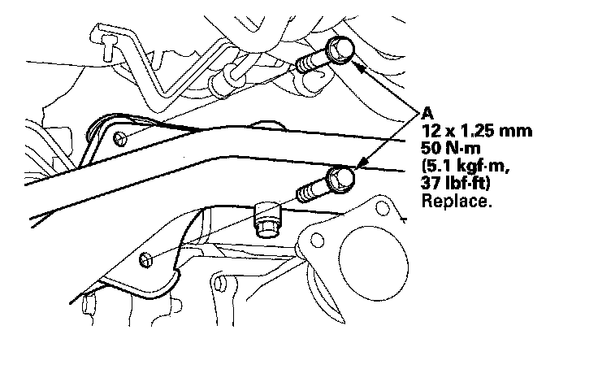
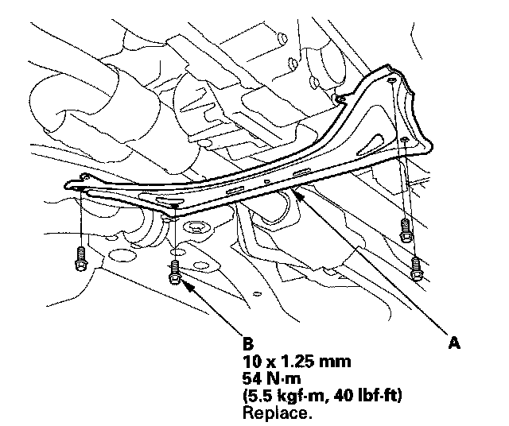
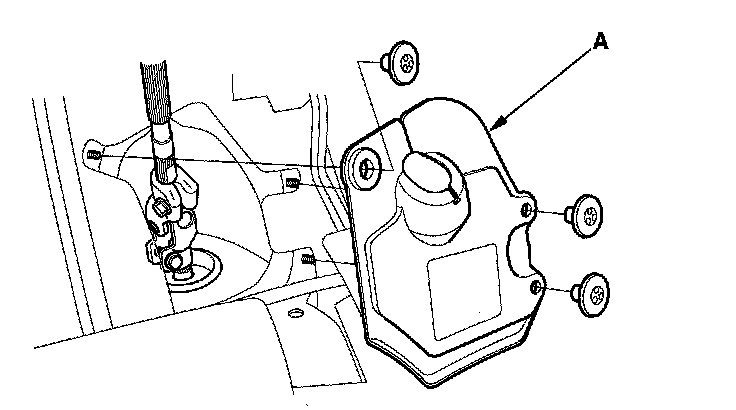

Steering Gearbox Installation
Steering Gearbox Installation1. Before installing the steering gearbox, make sure that no power steering fluid is on the mating surface of the steering gearbox and front subframe. To prevent the gearbox mounting bolts from loosening after the installation, remove any power steering fluid from the mount cushions and bolt holes.
2. Apply vinyl tape to the splines on the pinion shaft (A).
3. Install the pinion shaft grommet B on the top of the valve housing.
4. Slide the steering gearbox (A) between the front subframe and body from the driver's side.
5. Carefully move the steering gearbox (A) toward the passenger's side until the pinion shaft clears the wheelwell opening on the body.
6. Continue moving the gearbox toward the passenger's side until the steering gearbox is in position.
7. Install the gearbox stiffener bracket (A) on the left side of the front subframe, and tighten the bolts and nut to the specified torque.
8. Loosely install the new mounting bolts (A) on the left side of the steering gearbox.

9. Position the cutout (A) on the mounting cushion (B) as shown, and install it on the right side of the steering gearbox.
10. Install the gearbox mounting bracket (C) over the mounting cushion, and loosely install the mounting bolts.
11. Tighten the mounting bolts on the both sides of the steering gearbox to specified torque alternately in two or more steps.
12. Carefully raise the front subframe with the subframe adapter and the transmission jack or the powertrain lift until the subframe is it position.
13. Align all reference marks (A) on the front subframe (B) with the body.
14. Install the front subframe front brackets (A) with mounting bolts (B) and the new special bolts (C) and tighten to the specified torque.
15. Install the front subframe rear brackets (A) with mounting bolts (B) and the new special bolts (C) and tighten to the specified torque.
16. Lower the transmission jack supporting the front subframe.
17. Install the ground cable bolt (A) to the transmission.
18. Install the base bracket (A) with new mounting bolts (B) and mounting bolts (C) and tighten to the specified torque.
19. Install the rear engine mount (A) with new mounting bolts (B) and tighten to the specified torque.
20. Install the rear mount stop (A) with new mounting nuts (B) and tighten to the specified torque.
21. Install the inlet line clamp bolts (A) and tighten to the specified torque.
22. Install exhaust pipe B.
23. Install the propeller shaft and propeller shaft protectors.
24. Install the front subframe stiffener plate (A) with new mounting bolts (B) and tighten to the specified torque.

25. Install the front undercover and the front splash shield.
26. Connect the stabilizer links (A) to the lower arm.
27. Connect the lower arm ball joints.
28. Wipe off any grease contamination from the ball joint tapered section and threads. Reconnect the tie-rod ends (A) to the steering knuckles. Install the 12 mm nut (B) and tighten it.
29. Install the new cotter pin (C) and bend it as shown.
30. Remove the engine support hanger, the hanger balance bar, and the hanger adapter set.
31. Connect the return hose (A) securely, and tighten the adjustable hose clamp (B).
32. Connect the inlet line (C) and tighten the 16 mm flare nut (D) to the specified torque.
33. Center the steering rack within its stroke.
34. Insert the upper end of the steering joint onto the steering shaft (A) (line up the bolt hole (B) with the flat portion (C) on the shaft) and loosely install the upper joint bolt (D).
35. Slip the lower end of the steering joint onto the pinion shaft taking care to align the gap (E) within the angle.
36. Align the bolt hole (A) on the steering joint with the groove (B) around the pinion shaft then loosely install the joint bolt (C).
37. Pull on the steering joint to make sure that the steering joint is fully seated, then tighten the lower joint bolt to the specified torque.
38. Tighten the upper joint bolt (D) to the specified torque.
39. Install the steering joint cover (A).

40. Install the front wheel, then set the wheels in the straight ahead position.
41. Install the steering wheel.
42. Reconnect the negative battery cable to the battery, and do these tasks:
^ Turn the ignition switch ON (II); the SRS indicator should come on for about 6 seconds and then go off.
^ Enter the anti-theft code for the audio system and the navigation system (if equipped).
^ Make sure the horn and turn signal switches work properly.
^ Make sure the steering wheel switches work properly.
^ Make sure the steering wheel is centered.
^ Do the steering column position memorization.
43. Fill the system with power steering fluid, and bleed air from the system.
44. After installation, do these checks.
^ Start the engine, allow it to idle, and turn the steering wheel from lock-to-lock several times to warm up the fluid. Check the gearbox for leaks.
^ Do the front toe inspection.
^ Check the steering wheel spoke angle. If steering spoke angles to the right and left are not equal (steering wheel and rack are not centered), correct the engagement of the joint/pinion shaft serrations, then adjust the front toe by turning the tie-rod ends, if necessary.